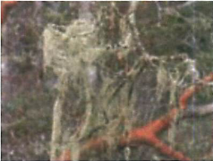

Most of the grayish-green clumps of plant-like material that you see at your feet or the "stringy stuff" hanging from the tree trunks and branches lives on air.
Lichens are complex relationships between fungi and algae. Algae produces carbohydrates through photosynthesis, while fungi provide protection and obtains moisture and nutrients from the air.
These two species of  lichens are some of the over 500 species of lichens that occur in the boreal forest. Green reindeer lichen (Cladina mitis) and the Northern reindeer lichen (Cladina stellaris) form much of the ground cover.
Gently touch some of the lichens at your feet. They may feel either brittle, if the weather has been dry, or springy, if there has been recent precipitation. Lichens act as sponges, taking up everything that comes their way, including air pollution. For this reason, lichens serve as indicators of air quality.
As you continue your walk, take note of the variety of lichens that you encounter - on the ground, on trees and on logs.
At your next stop you will find a kettle - but don't expect hot water for tea!